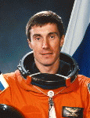

Lyndon B. Johnson Space Center
Houston, Texas 77058
|
National Aeronautics and Space Administration Lyndon B. Johnson Space Center Houston, Texas 77058 |
 |
Biographical Data |
||
Sergei Konstantinovich Krikalev
Russian Cosmonaut
PERSONAL DATA: Born August 27, 1958, in Leningrad, Russia, which has been renamed St. Petersburg. Married to Elena Terekhina of Samara, Russia. They have one daughter. He enjoys swimming, skiing, bicycle riding, aerobatic flying, and amateur radio operations, particularly from space. His parents, Konstantin and Nadia, reside in Leningrad, Russia. Her parents, Faina and Yuri, reside in Samara, Russia.
EDUCATION: Graduated from high school in 1975; in 1981, received mechanical engineering degree from the Leningrad Mechanical Institute, now called St. Petersburg Technical University.
SPECIAL HONORS: He was a member of the Russian and Soviet national aerobatic flying teams, and was Champion of Moscow in 1983, and Champion of the Soviet Union in 1986. For his space flight experience, he was awarded the title of Hero of the Soviet Union, the Order of Lenin, the French title of L'Officier de la Légion d'Honneur, and the new title of Hero of Russia. He also has been awarded the NASA Space Flight Medal (1994, 1998).
EXPERIENCE: After graduation in 1981, he joined NPO Energia, the Russian industrial organization responsible for manned space flight activities. He tested space flight equipment, developed space operations methods, and participated in ground control operations. When the Salyut 7 space station failed in 1985, he worked on the rescue mission team, developing procedures for docking with the uncontrolled station and repairing the station's on-board system.
Krikalev was selected as a cosmonaut in 1985, completed his basic training in 1986, and, for a time, was assigned to the Buran Shuttle program. In early 1988, he began training for his first long-duration flight aboard the MIR space station. This training included preparations for at least six EVA’s (space walks), installation of a new module, the first test of the new Manned Maneuvering Unit (MMU), and the second joint Soviet-French science mission. Soyuz TM-7 was launched on November 26, 1988, with Krikalev as flight engineer, Commander Alexander Volkov, and French Astronaut Jean-Loup Chretien. The previous crew (Vladimir Titov, Musa Manarov, and Valeri Polyakov) remained on MIR for another twenty-five days, marking the longest period a six-person crew had been in orbit. After the previous crew returned to Earth, Krikalev, Polyakov, and Volkov continued to conduct experiments aboard the MIR station. Because arrival of the next crew had been delayed, they prepared the MIR for a period of unmanned operations before returning to Earth on April 27, 1989.
In April 1990, Krikalev began preparing for his second flight as a member of the backup crew for the eighth long-duration MIR mission, which also included 5 EVA’s and a week of Soviet-Japanese operations. In December 1990, Krikalev began training for the ninth MIR mission which included training for 10 EVA’s. Soyuz TM-12 launched on May 19, 1991, with Krikalev as flight engineer, Commander Anatoly Artsebarsky, and British astronaut Helen Sharman. Sharman returned to Earth with the previous crew after one week, while Krikalev and Artsebarsky remained on MIR. During the summer, they conducted six EVA's to perform a variety of experiments and some station maintenance tasks.
In July 1991, Krikalev agreed to stay on MIR as flight engineer for the next crew, scheduled to arrive in October because the next two planned flights had been reduced to one. The engineer slot on the Soyuz-13 flight on October 2, 1991, was filled by Toctar Aubakirov, an astronaut from the Soviet republic of Kazakhstan, who had not been trained for a long-duration mission. Both he and Franz Viehbok, the first Austrian astronaut, returned with Artsebarsky on October 10, 1991. Commander Alexander Volkov remained on board with Krikalev. After the crew replacement in October, Volkov and Krikalev continued MIR experiment operations and conducted another EVA before returning to Earth on March 25, 1992.
In October 1992, NASA announced that an experienced cosmonaut would fly aboard a future Space Shuttle mission. Krikalev was one of two candidates named by the Russian Space Agency for mission specialist training with the crew of STS-60. In April 1993, he was assigned as prime mission specialist. In September 1993, Vladimir Titov was selected to fly on STS-63 with Krikalev training as his back-up.
Krikalev flew on STS-60, the first joint U.S./Russian Space Shuttle Mission. Launched on February 3, 1994, STS-60 was the second flight of the Space Habitation Module-2 (Spacehab-2), and the first flight of the Wake Shield Facility (WSF-1). During the 8-day flight, the crew of Discovery conducted a wide variety of materials science experiments, both on the Wake Shield Facility and in the Spacehab, earth observation, and life science experiments. Krikalev conducted significant portions of the Remote Manipulator System (RMS) operations during the flight. Following 130 orbits of the Earth in 3,439,705 miles, STS-60 landed at Kennedy Space Center, Florida, on February 11, 1994. With the completion of this flight, Krikalev logged an additional 8 days, 7 hours, 9 minutes in space.
Krikalev returned to duty in Russia following his American experience on STS-60. Periodically he returned to the Johnson Space Center in Houston to work with CAPCOM in Mission Control and ground controllers in Russia supporting joint U.S./Russian Missions. To date he has supported STS-63, STS-71, STS-74 and STS-76.
Krikalev flew on STS-88 Endeavour (December 4-15, 1998), the first International Space Station assembly mission. During the 11-day mission the Unity module was mated with Zarya module. Two crew members performed three space walks to connect umbilicals and attach tools/hardware for use in future EVA’s. The crew also performed IMAX Cargo Bay Camera (ICBC) operations, and deployed two satellites, Mighty Sat 1 and SAC-A. The mission was accomplished in 185 orbits of the Earth in 283 hours and 18 minutes.
Krikalev was a member of the Expedition-1 crew. They launched October 31, 2000 on a Soyuz rocket from the Baikonur launch site in Kazakhstan, successfully docking with the station on November 2, 2000. During their stay on the station they prepared the inside of the orbital outpost for future crews. They also saw the station grow in size with the installation of the U.S. solar array structure and the U.S. Destiny Laboratory Module. They left the station with the STS-102 crew, undocking from the station on March 18, with landing at the Kennedy Space Center, Florida, on March 21, 2001.
Krikalev was the Commander of Expedition-11 which launched from the Baikonur Cosmodrome in Kazakhstan on April 14, 2005 aboard Soyuz and docked with the ISS on April 16, 2005. Following 8-days of joint operations and handover briefings, they replaced the Expedition-10 crew who returned to earth aboard Soyuz. During their six-month stay aboard the station the crew continued station maintenance, worked with scientific experiments, and performed a spacewalk in Russian spacesuits from the Pirs Airlock. The Expedition-11 crew in their Soyuz spacecraft landed in the steppes of Kazakhstan on October 10, 2005. In completing this mission Krikalev logged 179 days and 23 minutes in space including an EVA totaling 4 hours and 58 minutes.
In completing his sixth space flight, Krikalev logged a total of 803 days, 9 hours and 39 minutes in space, including eight EVA's.
OCTOBER 2005